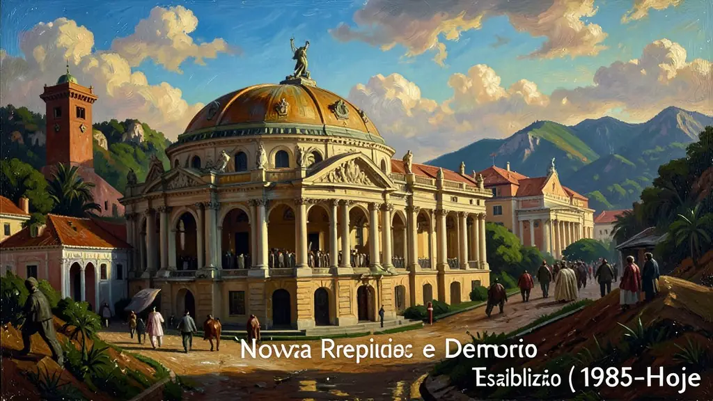
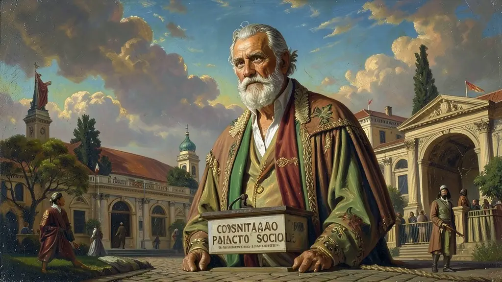
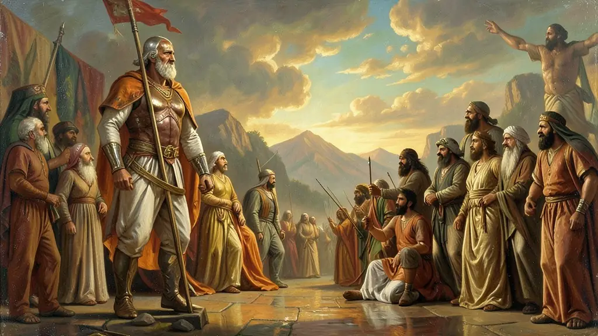

Capítulo 01
1. A Transição 'Lenta, Gradual e Segura'
Os generais Geisel e Figueiredo planejaram uma saída dos quartéis que garantisse a anistia aos militares. O movimento 'Diretas Já' (1984) reuniu milhões de brasileiros nas ruas, mas a eleição de 1985 ainda foi indireta via Colégio Eleitoral. A morte de Tancredo Neves foi o primeiro grande teste da estabilidade democrática, com Sarney (um ex-apoiador do regime militar) assumindo para garantir a transição institucional.

Capítulo 02
2. A Constituição de 1988: O Novo Pacto Social
Liderada por Ulysses Guimarães, a constituinte de 88 foi um exercício de cidadania. Pela primeira vez, grupos minoritários tiveram voz ativa na redação de leis. O resultado foi um texto que prioriza a dignidade humana. A autonomia dos estados e municípios foi reforçada, e os direitos à saúde (SUS) e à assistência social tornaram-se pilares do Estado brasileiro, rompendo com a visão de que política social era 'caridade'.

Capítulo 03
3. Do Choque de Collor ao Milagre do Real
Os anos 80/90 foram a 'década perdida' economicamente. Collor tentou 'matar o tigre com uma bala só' confiscando a poupança, o que gerou revolta social e sua queda. O Plano Real foi diferente: ele criou uma moeda de transição (URV) e preparou o mercado para a estabilidade. O sucesso do Real transformou o Brasil de um país que sofria com 80% de inflação ao mês em uma economia estável e atraente para o capital estrangeiro.

Capítulo 04
4. Estabilidade, Crescimento e os Desafios Sociais
FHC trouxe a responsabilidade fiscal. Lula trouxe o foco social. Entre 2003 e 2010, o Brasil viveu um 'boom de commodities' e milhões de cidadãos saíram da miséria. Contudo, problemas estruturais — como a dependência de exportação de soja e minério, a corrupção endêmica e o sistema político fragmentado — começaram a cobrar o preço, levando às manifestações de Junho de 2013, que pediam 'mais do que 20 centavos'.
Capítulo 05
5. Polarização e Ciclo de Crises Recentes
O Impeachment de Dilma em 2016 e a prisão de Lula abriram um vácuo de poder ocupado pela extrema-direita em 2018 com Jair Bolsonaro. A Nova República enfrenta hoje o seu maior desafio: a estabilidade das instituições (STF, Congresso) em um ambiente de desinformação digital e negação da ciência (visível na pandemia de COVID-19). A eleição de 2022 marcou o retorno de Lula ao poder, reafirmando a alternância democrática, mas mantendo o desafio de unificar um país ideologicamente cindido.
O exaustivo desgastante crônico das ruínas nas entranhas da falência econômica inflacionárias hipertrofiadas nos calabouços de pressões externas irrefreáveis nas censuras desgastada impopular letárgica ditadura incitou inevitável e inexoravelmente o calvário doloroso desastroso lento recuo generalizado na asfixiada formatação controlada das anistias recuadas gradativas impostas transicionais controlada recuada da amnistia fracionada da branda recuada pacificada do famigerado 'Lenta, gradual e segura' transição golpista do engessado generalato desfalecido rumo aberturas políticas pactuadas temerosas nas aberturas dos asilos civis esvaziadas amarguradas no regresso fardado e lento do projeto militar falido em prantos na derrocada inflacionada insustetável do regime brutal dos 'Anos de Chumbo' recuados.
O emblemático e irrefutável contundente de euforia e frustrações do estonteante efervescente inigualável levante nacional avassalador em erupções formidável agigantadas nas multidões pintadas das imensuráveis unidas praças colossais amareladas do frisson em coro clamoro magistral das inigualáveis das históricas emblemáticas unânimes 'Diretas Já', acendeu inconteste frustrante a rejeição reacionária parlamentar da derrota formidável na emenda na frustrada desilusão da emenda popular as urnas não garantindo a ida popular suprema e sendo asfixiada inabilita pelos oponentes engrenagem dita indiretas nas transições fatiadas dos pactos coronelistas conservadores no colégião na transigente e amarga recusa aos clamores da unânime direta urnadas cívicas roubadas renegas frustrantes cívica estancando provisoriamente o júbilo apoteótico frustrado transigência.
O legado essencial basilar nas exigências prementes consolidadas a magna forja estrutural balizadora a reconstrução da fundacional magna e imaculada e resplandecida inconteste de pilares e resgate cívico de resgate avassaladoras de igualdade sociais inconteste libertárias fundações no apoteótico pacto majestoso constituinte inabalável da reluzente magnânima humanista apoteótica fundacional libertária consagrada de epíteto imorredouro unânime da promulgação aclamada da majestática da 'Constituição Cidadã dos anos 88'. Instituindo baluartes nas garantias inafastáveis civis fundações sociais inalienáveis do sus e do estado apaziguadora referendada laica antirracista englobantes indígenas libertárias do panteão democrático restabelecendo imaculada unânime a magna majestática das cartas de reerguer as luzes pátrias da escuridão exilar de vez os pesadelos discricionários exíguos dantescos amargurados torturosos para o iluminador democrático consolidador eterno plural cidadão dos povos tramas unificadores nacionais de todos.
Fonte: SKIDMORE, Thomas E. Brasil: De Castelo a Tancredo (1964-1985). Paz e Terra, 1988.
Atividades interativas
Questões para fixar
A Constituição de 1988 é chamada de 'Constituição Cidadã' principalmente por que:
O Plano Real, lançado em 1994, diferenciou-se dos planos anteriores (Cruzado, Bresser, Verão) porque: